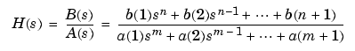
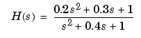
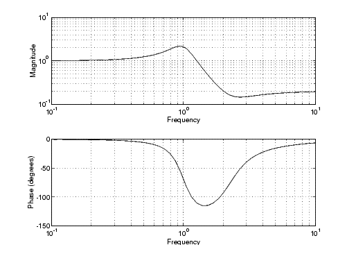
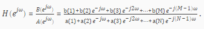
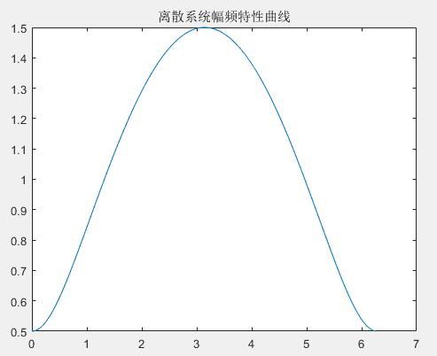
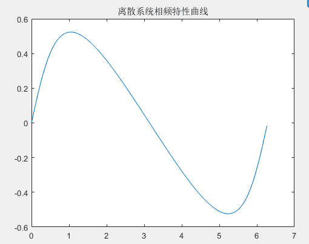

Matlab函数freqs和freqz
Jake G August 09, 2017 [编程] #matlab #拉普拉斯变换matlab中的freqs和freqz函数
1.freqs
模拟滤波器的频率响应
语法：
= freqs
= freqs
= freqs
freqs
1.1描述
freqs 返回一个模拟滤波器的H(jw)的复频域响应(拉普拉斯格式)

h = freqs(b, a, w) 根据系数向量计算返回模拟滤波器的复频域响应
freqs
计算在复平面虚轴上的频率响应h，角频率w确定了输入的实向量，因此必须包含至少一个频率点。
[h, w] = freqs(b, a) 自动挑选200个频率点来计算频率响应h
[h, w] = freqs(b, a, f) 挑选f个频率点来计算频率响应h
1.2例子
找到并画出下面传递函数的频率响应

Matlab代码：
= ;
= ;
= logspace;
freqs;
logspace
功能：生成从10的a次方到10的b次方之间按对数等分的n个元素的行向量
n如果省略，则默认值为50。
=freqs;
= abs; = angle;
subplot, loglog;
subplot, semilogx;
= /; = 20*log10; = *180/pi;

2.freqz
MATLAB提供了专门用于求离散系统频响特性的函数freqz()

调用freqz()的格式有以下两种：2.1[H,w]=freqz(B,A,N)
B和A分别为离散系统的系统函数分子、分母多项式的系数向量，N为正整数，返回量H则包含了离散系统频响 在 0------pi范围内N个频率等分点的值，向量w则包含范围内N个频率等分点。调用中若N默认，默认值为512。
2.2[H,w]=freqz(B,A,N,’whole’)
该调用格式将计算离散系统在0---pi范内的N个频率等分店的频率响应的值。因此，可以先调用freqz()函数计算系统的频率响应，然后利用abs()和angle()函数及plot()函数，即可绘制出系统在
或 范围内的频响曲线。
例：绘制如下系统的频响曲线
H(z)=(z-0.5)/z
MATLAB命令如下：
B=[1 -0.5];
A =[1 0];
[H,w]=freqz(B,A,400,'whole');
H是频率响应的幅度，w是0---pi内的400个点
Hf=abs(H);
Hx=angle(H);
clf
figure(1)
plot(w,Hf)
title('离散系统幅频特性曲线')
figure(2)
plot(w,Hx)
title('离散系统相频特性曲线')


这样画出来的是线性的，要想获得db格式的幅度，需要转换 20*log10（Hf）
之后再画就是db格式的
也可以直接用freqz(b,a,w)这样就会画出幅频响应和相频响应，幅频响应直接是db格式的幅度。